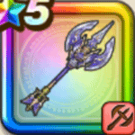

神鳥の翼斧
攻略班 9.5点 / 時空干渉いてつくはどうホーリーラッシュゆるがぬこころ時超えし神鳥の秘術目覚めし翼
くわしい特徴
【レベル別習得スキル】 Lv1【海賊】攻撃力+5 Lv1【パラディン】守備力+5 Lv15時空干渉（消費MP：最大MPの15%）自分と両隣にいる味方の良い効果を1ターン延長する(戦闘中2回のみ使用可能) Lv20いてつくはどう（消費MP：最大MPの40%）敵全体の強化効果を一部を除き全て解除する(戦闘中1回のみ使用可能) Lv30ホーリーラッシュ（消費MP：58）敵全体に威力500%とランダムな敵に3回威力270%の敵ごとに有効なイオかデインの斬撃ダメージを与え、3回ランダムな敵のテンションをたまに確率で下げる Lv35けもの系へのダメージ+5% Lv40????系へのダメージ+5% Lv45攻撃力+12 Lv50ゆるがぬこころ（消費MP：10）自身にテンションを下げる効果を無効化するが、スキルを除く敵味方の行動によってテンションが上がりにくくなる効果を付与(効果4ターン) Lv50時超えし神鳥の秘術（消費MP：最大MPの12%）自身と左隣の味方に行動終了時に良い効果を1ターン延長させる効果を付与する(効果2ターン) Lv50目覚めし翼（消費MP：30）戦闘中自身の行動で敵のテンションを-50まで下げた時、自身のテンションを4段階上げ、会心が超会心の一撃になる効果を付与し、もう1回行動できる 【限界突破スキル】 1凸スキルの斬撃・体技ダメージ+7% 2凸スキルの斬撃・体技ダメージ+7% 3凸スキルの斬撃・体技ダメージ+7% 4凸スキルの斬撃・体技ダメージ+7%